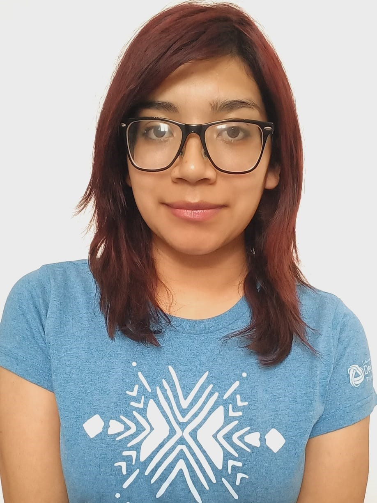

Hola, soy Josselyn Hernández

Soy estudiante de la Licenciatura en Diseño Industrial en la Universidad La Salle Bajio. Soy una persona creativa y perseverante que cumple lo que se propone, tengo intereses por la pintura y la literatura . Cuento con aptitudes artísticas y matemáticas. Así como también me desempeño bien enseñando o transmitiendo conocimientos. Siempre estoy investigando, y buscando aprender nuevas habilidades
Desarrollo Web
Forme parte del Bootcamp Tecnolochicas PRO en cual aprendi los fundamentos basicos de la programacion en HtMl y CSS .
Estudiante
Ingrese a la universidad gracias a la Beca San Juan Bautista de La Salle, la cual cubre el 100% de las colegiaturas. Para mantenerla debo llevar buen promedio y cumplir con mi servicio de reciprocidad, el cual he hecho siendo jefa de grupo y en distintos grupos a lo largo de mi carrera.
Maestra
Durante la cuarentena, impartí clases a estudiantes y jóvenes de mi comunidad de origen. Las clases en linea era algo a lo que no podían acceder por falta de Internet y equipos adecuados, así que enseñe a pequeños grupos de niños de secundaria y bachillerato. Seguí dando estas asesorías mientras tenia mis clases en linea. Cuando volvimos a la presencialidad mantuve el contacto con mis alumnos y actualmente durante las vacaciones cuando regreso tenemos sesiones de estudio